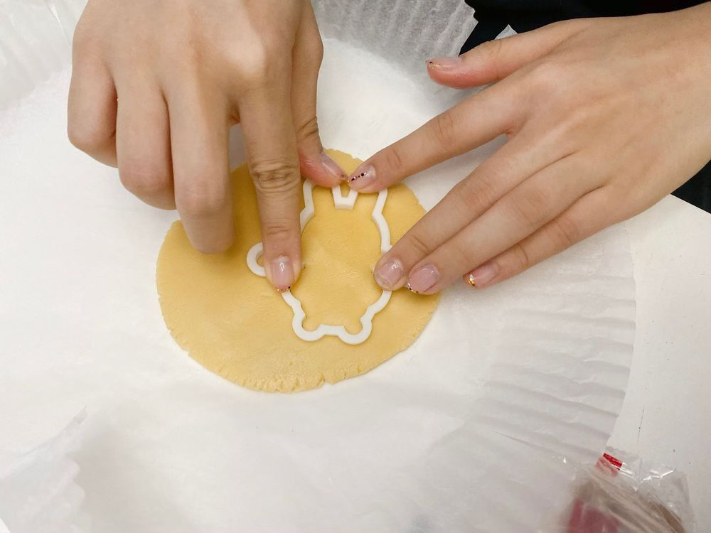
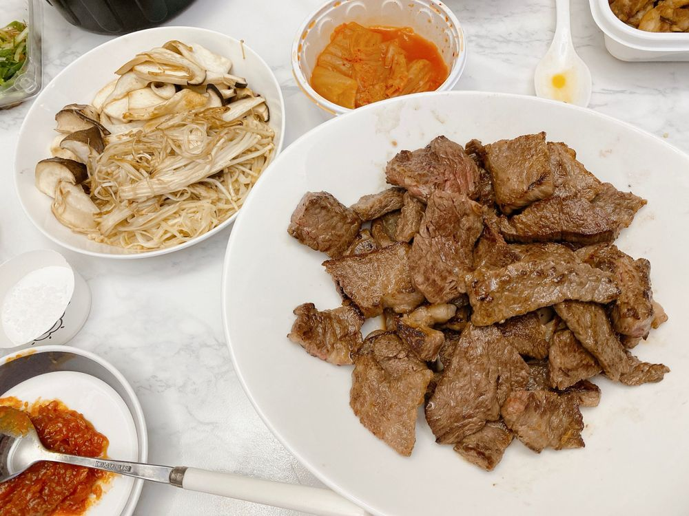

おはよう☀
ひいだよ🍓

これユリが頑張ってみんなに
クッキー作ってる写真🍪
可愛いよね笑
ひいも久しぶりに
お菓子作りしたくなった🧑🏻🍳🌟
이호は昨日
どんなクリスマスを過ごしましたか？？
ひいはお肉焼いて食べました🤗
だから今お家の中がお肉の香りでいっぱい🙂
食べてるときは
「いい匂い〜🥺」ってなるけど
食べ終わってからもずっとその匂いだと
「おっ…まだお肉の匂いすごい🤦🏻♀️」ってなる笑
から家出てくる前まで換気してたけど
このお家はあんまり匂い抜けないねえ🙄
なにか換気と消臭スプレー以外で
消臭する方法ないかな😶
何か知ってたら教えて🙋🏻♀️
ではまたっ
어제는 어떤 크리스마스를 보냈어???
난 아주 맛있는거 먹었어🤗히히
고기 구워 먹었는데
냄새가 진짜 안 빠져ㅋㅋㅋㅋ
그래서 아침에 창문 열어서 환기 했는데
그래도 효과가 하나도 없는 정도🙄
지금 우리 숙소 고기 냄새 월드🥩ㅎ
맛있는거 많이 먹으면서
가요대전도 볼 수 있어서 행복한 하루였어☺️
TMI💡
어제 유트브 보면서 홈트 해봤다!!
너무 재밌더라😆
오늘도 해야징~><
추천메뉴는...
감자탕🥘
깻잎만 없으면 맛있는딩...😕

소고기지만 쌈장도ㅎ
고기도 버섯도 내가 다 구웠지롱😉헤헷
ばいばーい👋🏻
ひいまる🥟